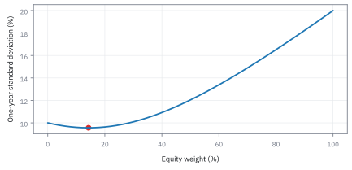
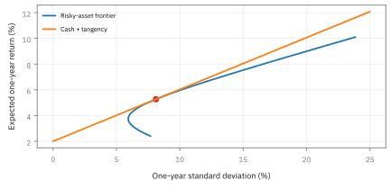
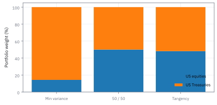
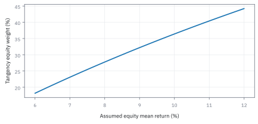
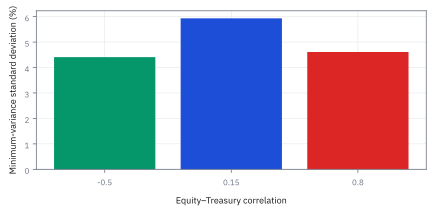
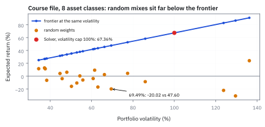

17.3 Markowitz Portfolio Theory
มองความเสี่ยงของสินทรัพย์ร่วมกัน ก่อนเลือกน้ำหนักที่ดูดีที่สุด
มีเงิน \$10 ล้าน จัดพอร์ตระหว่างหุ้น (เฉลี่ย 9% ผันผวน 20%) กับพันธบัตร (เฉลี่ย 3.5% ผันผวน 6%) โดยมี correlation 0.15 และเงินสด $r_f=2\%$ พอร์ตเสี่ยงต่ำสุดและพอร์ต Sharpe สูงสุดควรลงเงินเท่าไร?
เฉลย: พอร์ตเสี่ยงต่ำสุดลงหุ้น 4.50% (\$450,000 ) พันธบัตร 95.50% ให้ความผันผวน 5.93% (ต่ำกว่าพันธบัตรเดี่ยว 6.00%); พอร์ตสัมผัสลงหุ้น 32.19% (\$3,219,000 ) พันธบัตร 67.81% ให้ Sharpe 0.4030 ชนะหุ้นเดี่ยว 15.1%
ศัพท์ที่ใช้ในหัวข้อนี้
- mean-variance
- กรอบจัดพอร์ตที่ใช้ค่าเฉลี่ยและ variance เพื่อเปรียบเทียบผลตอบแทนต่อความเสี่ยงโดยกำหนดช่วงเวลาเดียวกัน
- covariance
- ค่าสถิติที่ใช้วัดการเคลื่อนไหวร่วมกันของสองสินทรัพย์เพื่อคำนวณความเสี่ยงรวมของพอร์ต
- correlation
- covariance ที่ปรับด้วย standard deviation ของทั้งสองสินทรัพย์ ใช้เปรียบเทียบระดับความสัมพันธ์โดยไม่ขึ้นกับหน่วยวัด
- variance
- ค่าเฉลี่ยของส่วนเบี่ยงเบนกำลังสอง ใช้วัดการกระจายตัวของผลตอบแทนรอบค่าเฉลี่ย
- standard deviation
- รากที่สองของ variance ที่อยู่ในหน่วยเดียวกับผลตอบแทน ใช้วัดความผันผวนของพอร์ต
- efficient frontier
- ชุดพอร์ตที่ให้ผลตอบแทนสูงสุด ณ แต่ละระดับความเสี่ยง ใช้คัดเลือกพอร์ตที่ดีที่สุดและตัดพอร์ตที่ด้อยกว่าออก
- Sharpe ratio
- ผลตอบแทนส่วนเกินเงินสดหารด้วย standard deviation ใช้วัดความคุ้มค่าของผลตอบแทนต่อหนึ่งหน่วยความเสี่ยง
- tangency portfolio
- พอร์ตสินทรัพย์เสี่ยงที่มี Sharpe ratio สูงสุด ใช้ผสมกับเงินสดเพื่อสร้างเส้นจัดสรรเงินลงทุนที่ดีที่สุด
สัญลักษณ์ที่ใช้ในหัวข้อนี้
| สัญลักษณ์ | ความหมาย | หน่วย |
|---|---|---|
| $w,w_E,w_B,\mathbf1$ | weight vector, น้ำหนักหุ้น, น้ำหนักพันธบัตร และ vector ที่ทุกช่องเป็นหนึ่ง | สัดส่วน, ไม่มีหน่วย |
| $\mu,\mu_p,r_f$ | ค่าเฉลี่ยสินทรัพย์ ค่าเฉลี่ยพอร์ต และอัตราเงินสดปลอดความเสี่ยงสำหรับหนึ่งปี | สัดส่วน |
| $\Sigma$ | ตารางความเสี่ยงร่วมรายปีของทุกคู่สินทรัพย์ | สัดส่วนกำลังสอง |
| $\sigma_p,\sigma_{\text{mv}}$ | standard deviation ของพอร์ตทั่วไป และของพอร์ตความเสี่ยงต่ำสุด | สัดส่วน |
| $\rho$ | correlation ระหว่างคู่สินทรัพย์ ตัวที่ทำให้ผลรวมน้อยกว่าผลบวก | ไม่มีหน่วย |
| $A$ | ตัวเลขสรุปตัวแรกจาก inverse covariance กับ vector ที่ทุกช่องเป็นหนึ่ง | ผกผันสัดส่วนกำลังสอง |
| $B$ | ตัวเลขสรุปที่ผสม inverse covariance กับผลตอบแทนคาดหวัง | ผกผันสัดส่วน |
| $C$ | ตัวเลขสรุปจาก inverse covariance กับผลตอบแทนคาดหวังทั้งสองข้าง | ไม่มีหน่วย |
| $D$ | ตัวประกอบร่วมที่ใช้เป็นตัวหารของคำตอบ | ผกผันสัดส่วนกำลังสอง |
| $m$ | ผลตอบแทนรายปีที่เราตั้งเป็นเป้าหมาย | สัดส่วน |
| $w_{\text{tan}}$ | น้ำหนักของพอร์ตสัมผัส คือพอร์ตที่ Sharpe ratio สูงสุด | สัดส่วน |
| $\gamma$ | parameter ระดับความกลัวความเสี่ยง (risk aversion) | ไม่มีหน่วย |
| $\mathbf g,\mathbf h$ | vector ฐานสองตัวที่ใช้สร้างพอร์ตบน efficient frontier ตามทฤษฎี Two-Fund | สัดส่วน |
ที่มาที่ไป: กลับมาที่ Markowitz พร้อมเครื่องมือที่ครบขึ้น
หัวข้อ 8.5 แนะนำแนวคิดจัดพอร์ตไปแล้วในบริบทของการหาค่าที่ดีที่สุด หัวข้อนี้กลับมาที่เรื่องเดิมอีกครั้งในบริบทของการบริหารความเสี่ยงเชิงปริมาณ
ก่อนที่ Markowitz จะสร้าง model นี้ มีหลักการพื้นฐาน: หากมีสินทรัพย์อิสระต่อกัน $d$ ตัวที่มี variance เท่ากัน การแบ่งเงินลงทุนเท่ากันทุกตัวจะได้ผลตอบแทนเฉลี่ยเท่าเดิม แต่ variance ของพอร์ตจะลดลงเหลือเพียง 1 ใน $d$ เท่า
Markowitz ขยายแนวคิดนี้สู่โลกความเป็นจริงที่สินทรัพย์ไม่ได้เป็นอิสระต่อกัน แต่มี covariance ต่อกัน ทำให้เราต้องใช้ matrix algebra ในการแก้ปัญหา
ปัญหาสำคัญคือ ในโลกจริงเราไม่รู้ค่าเฉลี่ยและ covariance ที่แท้จริง ความคลาดเคลื่อนจากการประมาณจะถูกขยายอย่างรุนแรงตอน inverse matrix ทำให้ได้น้ำหนักที่สุดโต่งจนนำไปเทรดตรง ๆ ไม่ได้ ซึ่งหัวข้อ 17.8 และ 17.9 จะมาแก้ไขจุดนี้
ที่มาของแนวคิด: จุดเริ่มต้นของ Harry Markowitz ในปี 1952
ก่อนปี 1952 ตำราการเงินคลาสสิกของ John Burr Williams ในปี 1938 และแนวคิดของ Benjamin Graham สอนให้นักลงทุนเลือกหลักทรัพย์ด้วยการคิดลดเงินปันผลหรือกระแสเงินสดในอนาคต หากสินทรัพย์ใดมี expected return สูงสุด ก็จะแนะนำให้นักลงทุนเลือกลงทุนในสินทรัพย์นั้น
เมื่อ Harry Markowitz ยังเป็นนักศึกษาปริญญาเอกที่ University of Chicago เขาได้อ่านตำราเหล่านั้นในห้องสมุดแล้วตั้งคำถามง่าย ๆ ว่า ถ้าเป้าหมายของทุกคนคือ expected return สูงสุดจริง ทำไมไม่มีใครทุ่มเงินทั้งหมด 100% ลงในสินทรัพย์ตัวเดียวที่ให้ค่าเฉลี่ยสูงสุด
ความจริงที่นักลงทุนทุกคนทำคือการกระจายเงิน นั่นแปลว่าทุกคนยอมรับความจริงอีกด้านคือความเสี่ยง Markowitz จึงเสนอให้ใช้ variance เป็นตัวแทนความเสี่ยง และมองว่าความเสี่ยงของพอร์ตไม่ได้ขึ้นกับความผันผวนของสินทรัพย์เดี่ยว ๆ แต่ขึ้นกับ covariance หรือการเคลื่อนไหวร่วมกันของสินทรัพย์แต่ละคู่ การเปลี่ยนมุมมองจากการเลือกหุ้นรายตัวมาเป็นการผสมผสานทั้งพอร์ตนี้ จึงกลายเป็นรากฐานของ Mean-Variance Optimization
ของที่โจทย์ให้ — Worked Example — สองสินทรัพย์กับเงิน \$10 ล้าน
โจทย์ให้หุ้นสหรัฐฯ มี expected return 9% และ standard deviation 20% ต่อปี ส่วนพันธบัตรรัฐบาลสหรัฐฯ มี 3.5% และ 6% โดย correlation เท่ากับ 0.15 เรามีเงิน \$10 ล้าน และให้น้ำหนักสองฝั่งรวมกันเป็นหนึ่ง
เราจะเช็กพอร์ต 50/50 ก่อน แล้วหาส่วนผสมที่ความเสี่ยงต่ำสุด จากนั้นค่อยเพิ่มอัตราเงินสด 2% เพื่อหาพอร์ตสัมผัสที่แลกผลตอบแทนกับความเสี่ยงได้ดีที่สุด ตัวอย่างนี้ยังไม่รวมค่าซื้อขาย
ขั้นที่ 1 — สร้าง covariance จากข้อมูลโจทย์
โจทย์ให้ความผันผวนรายตัวกับความสัมพันธ์มา ต้องประกอบเป็นตารางเดียวก่อน เพราะสูตรทั้งหมดต่อจากนี้ใช้ตารางนั้น
ช่องนอกแนวทแยงเกิดจากความสัมพันธ์คูณ standard deviation ทั้งคู่: 0.15 × 0.20 × 0.06 = 0.0018 ไม่ใช่ใส่ correlation ลงในตารางตรง ๆ
สังเกตว่าแนวทแยงเป็นบวก ตารางสมมาตร และ 0.0018 น้อยกว่า 0.012 เพื่อให้ correlation ไม่เกินหนึ่ง
ขั้นที่ 2 — ตรวจพอร์ตครึ่งต่อครึ่ง
ลองพอร์ตที่ง่ายที่สุดก่อน เพื่อให้เห็นว่าความเสี่ยงรวมไม่ใช่ค่าเฉลี่ยของความเสี่ยงสองตัว
พอร์ต 50/50 ได้ผลตอบแทนเฉลี่ย 6.25% ต่อปี และ standard deviation 10.86% ต่อปี
ค่าเฉลี่ยแบบไม่คิดการเคลื่อนไหวร่วมคือ (20% + 6%)/2 = 13.00% แต่ของจริงเหลือ 10.86% เพราะพจน์ร่วมช่วยซับแรงแกว่ง
ขั้นที่ 3 — ลองด้วยมือ: พอร์ตครึ่งต่อครึ่งเดิม กับ correlation สามค่า
ก่อนหาน้ำหนักที่ดีที่สุด ลองตรึงน้ำหนักไว้ครึ่งต่อครึ่ง แล้วหมุนปุ่ม correlation ดูว่าความเสี่ยงรวมขยับอย่างไร
น้ำหนักเท่าเดิม สินทรัพย์เท่าเดิม เปลี่ยนแค่ความสัมพันธ์ระหว่างสินทรัพย์ ถ้าไปทางเดียวกันเป๊ะ ความเสี่ยงคือค่าเฉลี่ยธรรมดา 13.00%
ถ้าสวนทางกันเป๊ะ ความผันผวนหักล้างกันเหลือ 7.00% ของจริงที่ correlation เท่ากับ 0.15 อยู่ตรงกลางที่ 10.86% ส่วนต่าง 2.14% คือผลประโยชน์จากการกระจายความเสี่ยง
นี่คือหัวใจของ Markowitz: พอร์ตลงทุนช่วยลดความเสี่ยงได้ตราบใดที่ความสัมพันธ์ต่ำกว่าหนึ่ง
ขั้นที่ 4 — หาพอร์ตความเสี่ยงต่ำสุด
กางวงเล็บให้หมดก่อน แล้วรวมพจน์ที่กำลังเท่ากัน จึงจะเห็นว่า derivative มาจากตัวเลขไหนบ้าง
จัดรูปสมการกำลังสองได้ตัวคูณหน้า $w_E^2$ เป็นบวก จุดที่ความชันเป็นศูนย์จึงเป็นจุดต่ำสุดจริง ได้น้ำหนักหุ้น 4.50% และพันธบัตร 95.50%
คำนวณความเสี่ยงที่จุดนั้น: แทน $w_E = 0.0450$ ได้ variance เท่ากับ $0.0400(0.0450^2) - 0.0036(0.0450) + 0.0036 = 0.003519$ ถอดรากได้ standard deviation เท่ากับ 5.93%
ความผันผวน 5.93% นี้ต่ำกว่าการถือพันธบัตรล้วน 6.00% เสียอีก ทั้งที่ใส่หุ้นที่แกว่ง 20% เข้าไป และได้ผลตอบแทนเฉลี่ย 3.75%
แล้วเอาไปใช้ทำอะไรได้จริงบ้าง
การเลือกน้ำหนักที่สมดุลระหว่างผลตอบแทนกับความเสี่ยง เป็นกรอบคิดที่ใช้ทั้งอุตสาหกรรม
ใช้จัดสรรเงินข้ามสินทรัพย์ประเภทต่าง ๆ ซึ่งเป็นการตัดสินใจที่มีผลต่อผลตอบแทนมากที่สุด
ใช้แสดงให้เห็นเป็นตัวเลขว่าการกระจายความเสี่ยงมีค่าเท่าไร
ในทางทฤษฎี Markowitz นิยามปัญหาได้ 3 แบบที่ให้ผลเหมือนกันทุกประการ: (1) ลดความเสี่ยงโดยกำหนดผลตอบแทนเป้าหมาย (2) เพิ่มผลตอบแทนโดยกำหนดงบความเสี่ยง และ (3) เพิ่มผลตอบแทนส่วนเกินที่หักด้วยค่าปรับความเสี่ยงตามระดับความกลัวความเสี่ยง
Figure 17.3a — ถือหุ้นบางส่วนกลับเสี่ยงต่ำกว่าพันธบัตรล้วน

เส้นความเสี่ยงมีค่าต่ำสุดที่หุ้น 4.50% ให้ความผันผวน 5.93% ต่ำกว่าพันธบัตรล้วน 6.00% ผลของการกระจายเกิดจาก correlation 0.15 ที่ต่ำพอ
ขั้นที่ 5 — สร้าง frontier สำหรับหลายสินทรัพย์
ขยายจากสองตัวเป็นหลายตัว โดยเขียนเป็นปัญหาที่มีข้อบังคับสองข้อ สี่บรรทัดนี้บอกผลที่สำคัญที่สุดก่อนจะแทนตัวเลขใด ๆ คือพอร์ตที่ดีที่สุดทุกตัว เป็นส่วนผสมของพอร์ตพื้นฐานสองตัวเท่านั้น ไม่ว่าเป้าหมายผลตอบแทนจะเป็นเท่าไร
สร้าง Lagrangian ตามวิธีของหัวข้อ 8.4 โดยติดราคาให้ข้อบังคับสองข้อ ตัวคูณครึ่งข้างหน้าใส่ไว้เพื่อให้ derivative ออกมาสะอาด ไม่ได้เปลี่ยนคำตอบเลย
หา derivative เทียบน้ำหนักแล้วตั้งเป็นศูนย์ พจน์กำลังสองให้ $\Sigma w$ ตามที่หัวข้อ 8.3 คำนวณไว้ โดยใช้ความสมมาตรของตาราง
ย้ายข้างแล้วอ่านผล ความเสี่ยงส่วนเพิ่มของทุกตัวต้องเป็นส่วนผสมของสองทิศเท่านั้น คือทิศที่ทุกตัวเท่ากัน กับทิศของผลตอบแทนคาดหวัง ไม่มีทิศที่สามเลย ไม่ว่าจะมีสินทรัพย์กี่ตัว
คูณด้วยอินเวอร์สเพื่อแยกน้ำหนักออกมา ทำได้เมื่อตารางกลับด้านได้ตามหัวข้อ 4.5 ยังเหลือตัวคูณสองตัวที่ไม่รู้ค่า ซึ่งขั้นถัดไปจะหาจากข้อบังคับ
ขั้นที่ 6 — แก้ระบบสองตัวแปรแทนหาอินเวอร์สซ้ำ
แทนที่จะกลับ matrix ใหม่ทุกครั้งที่เปลี่ยนเป้าหมาย มีวิธีที่เหลือแค่แก้ระบบสองตัวแปร สูตรข้างล่างคือที่มาของเส้นโค้งรูปกระสุน และเฉพาะครึ่งบนของมันเท่านั้นที่ใช้ได้จริง
ตั้งชื่อสี่ก้อนที่คำนวณครั้งเดียวแล้วใช้ตลอด ทุกก้อนใช้อินเวอร์สตัวเดียวกัน จึงกลับตารางแค่ครั้งเดียว ไม่ใช่ทุกครั้งที่เปลี่ยนเป้าหมาย
แทนรูปน้ำหนักของขั้นที่ 5 ลงในข้อบังคับทีละข้อ ได้สมการเชิงเส้นสองสมการที่มีตัวไม่รู้สองตัว แก้ด้วยกฎกลับ 2×2 จากหัวข้อ 4.5
ทางลัดอยู่ที่แถว $w^\top(\alpha\mathbf1+\beta\mu)$ เมื่อคูณด้วยน้ำหนักจึงได้ตัวคูณแรกคูณผลรวมน้ำหนัก บวกตัวคูณที่สองคูณผลตอบแทน ซึ่งข้อบังคับกำหนดไว้แล้วทั้งคู่
แทนค่าแล้วได้พาราโบลาในเป้าหมายผลตอบแทน สำหรับข้อมูลของเรา $A=284.1716, B=10.6493, C=0.4747, D=21.4906$ จุดยอดคือ $m=B/A=3.75\%$ ให้ variance ต่ำสุด $1/A=0.003519$
ขั้นที่ 7 — ทฤษฎี Two-Fund: แยกน้ำหนักเป็นสอง vector ฐาน
จัดรูปคำตอบ $w$ โดยแยกส่วนที่ไม่ขึ้นกับเป้าหมาย $m$ ออกจากส่วนที่คูณกับ $m$ ผลลัพธ์นี้บอกความจริงสำคัญว่า ทุกพอร์ตบน frontier เกิดจากการผสมของ vector คงที่เพียงสองตัว
แยกก้อนที่ไม่มี $m$ ออกมาเป็น vector $\mathbf g$ และก้อนที่คูณกับ $m$ เป็น vector $\mathbf h$ ทั้งสอง vector นี้คำนวณจาก covariance matrix และ expected return เพียงครั้งเดียว
เมื่อน้ำหนักเป็น function เชิงเส้นของ $m$ จึงได้บทพิสูจน์ของ Two-Fund Separation Theorem ทันที
หากมีพอร์ตบน frontier สองพอร์ตใด ๆ ที่ให้ผลตอบแทนต่างกัน เราสามารถสร้างพอร์ตที่เหมาะสมกับเป้าหมาย $m$ ทุกจุดได้ด้วยการผสมสองพอร์ตนั้น
นักลงทุนจึงไม่จำเป็นต้องซื้อหุ้นรายตัวนับร้อยตัวด้วยตนเอง แต่ซื้อผ่านกองทุนรวมสองกองทุนก็เพียงพอ
ขั้นที่ 8 — ทฤษฎี One-Fund: ที่มาของสูตรพอร์ตสัมผัส
เมื่อมีสินทรัพย์ไร้ความเสี่ยงที่ให้ผลตอบแทน $r_f$ เราแบ่งเงินลงทุนเป็นสัดส่วน $w$ ในสินทรัพย์เสี่ยง และ $1-\mathbf1^\top w$ ในสินทรัพย์ไร้ความเสี่ยง การหาพอร์ตที่ดีที่สุดนำไปสู่บทสรุปของ One-Fund Theorem
สมการแรกตั้งเป้าหมาย maximize ผลตอบแทนที่ปรับด้วยความเสี่ยง โดย $\gamma$ คือ parameter บอกความกลัวความเสี่ยง
หา derivative เทียบกับ $w$ แล้วจับเท่ากับศูนย์ จะได้ว่าตำแหน่งในสินทรัพย์เสี่ยงต้องแปรผันตาม $\Sigma^{-1}$ คูณ excess return
จังหวะสำคัญที่สุดคือการปรับสัดส่วนให้รวมเป็นหนึ่ง ตัวคูณ $1/\gamma$ ตัดกันหมดทั้งเศษและส่วน
แปลว่าไม่ว่านักลงทุนจะกลัวความเสี่ยงมากหรือน้อย ทุกคนจะถือสินทรัพย์เสี่ยงในสัดส่วน $w_{\text{tan}}$ เดียวกันเป๊ะ นี่คือ One-Fund Theorem ของ James Tobin
ความต่างของแต่ละคนอยู่ที่การเลือกว่าจะถือเงินสดกี่เปอร์เซ็นต์และถือพอร์ต $w_{\text{tan}}$ กี่เปอร์เซ็นต์เท่านั้น
ขั้นที่ 9 — คำนวณตัวเลขพอร์ตสัมผัสด้วย matrix สองสินทรัพย์
หา $\Sigma^{-1}$ ด้วยสูตร matrix 2×2 ก่อน แล้วคูณกับผลตอบแทนส่วนเกิน จากนั้นหารด้วยผลรวมของตัวเองเพื่อให้น้ำหนักรวมเป็นหนึ่ง
ใส่ expected return และ covariance matrix ลงในสูตร inverse matrix ได้ $u_1 = 25.5754(0.070) - 12.7877(0.015) = 1.5985$ และ $u_2 = -12.7877(0.070) + 284.1716(0.015) = 3.3674$
ผลรวมของ vector คือ $1.5985 + 3.3674 = 4.9659$ ซึ่งตรงกับ $B - r_f A = 10.6493 - 0.02(284.1716) = 4.9659$ พอดี
หารด้วยผลรวมได้น้ำหนักหุ้น 32.19% และพันธบัตร 67.81% รวมกันได้ 100% ทั้งคู่เป็นบวกจึงไม่ต้องทำ short
พอร์ตนี้ให้ผลตอบแทนเฉลี่ย 5.27% ต่อปี ความผันผวน 8.12% ต่อปี และ Sharpe ratio เท่ากับ 0.4030
ขั้นที่ 10 — เทียบกับสินทรัพย์เดี่ยวและวัดมูลค่าของการกระจาย
วัดความคุ้มค่าของการกระจายความเสี่ยง โดยเทียบ Sharpe ratio ของพอร์ตสัมผัสกับสินทรัพย์เดี่ยวที่ดีที่สุด
พอร์ตสัมผัสให้ Sharpe 0.4030 สูงกว่าหุ้นเดี่ยวที่ 0.3500 ถึง 15.14% ส่วนต่างนี้มาจาก correlation 0.15 ที่ช่วยลด covariance ลง
หากใช้ leverage 2.46 เท่าปรับความเสี่ยงของพอร์ตให้เท่ากับหุ้นเดี่ยวที่ 20% จะได้ผลตอบแทน 10.06% ต่อปี เพิ่มขึ้นฟรี 1.06 จุดเปอร์เซ็นต์ต่อปี
สูตรปิด $\sqrt{C - 2r_f B + r_f^2 A}$ ให้ 0.4030 ตรงกับการคำนวณตรง ใช้เป็นเครื่องตรวจงานได้เสมอ
Figure 17.3b — Frontier และเส้นผสมเงินสด

แขนบนให้ค่าเฉลี่ยมากกว่าที่ความเสี่ยงเท่ากัน ส่วนเส้นจากเงินสดแตะ frontier ที่พอร์ตสัมผัส (ความผันผวน 8.12% ผลตอบแทน 5.27%) การต่อเส้นผ่านจุดสัมผัสสมมติกู้ได้ที่อัตราเดียวกับที่ฝาก
Figure 17.3c — เปรียบเทียบส่วนผสมที่ส่งเป็นเงินได้

พอร์ตความเสี่ยงต่ำสุด (หุ้น 4.50% / พันธบัตร 95.50%) กับพอร์ตสัมผัส (หุ้น 32.19% / พันธบัตร 67.81%) ตอบโจทย์คนละแบบ น้ำหนักแต่ละชุดรวมหนึ่งจึงคูณกับทุน \$10 ล้านได้โดยตรง
Figure 17.3d — เปลี่ยนค่าเฉลี่ยแล้วน้ำหนักขยับ

ภาพทดสอบความไวใช้ covariance เดิม แต่เปลี่ยนค่าเฉลี่ยหุ้น 6–12% น้ำหนักของพอร์ตสัมผัสตอบสนองต่อข้อมูลที่ป้อนมาก จึงต้องประเมินความผิดพลาดของค่าประมาณก่อนสั่งซื้อ
Figure 17.3e — correlation เปลี่ยนราคาของการกระจาย

เมื่อ standard deviation เดิม แต่ correlation สูงขึ้น พอร์ตความเสี่ยงต่ำสุดยังหาได้แต่ความเสี่ยงต่ำสุดสูงขึ้น กราฟนี้แยกให้เห็นว่า covariance เป็นข้อมูลที่ขับเคลื่อนการกระจายความเสี่ยงโดยตรง
ขั้นที่ 11 — ไฟล์ Excel ของคอร์ส: พอร์ตสัมผัสของแปดกลุ่มสินทรัพย์
ไฟล์ของคอร์สมีแปดกลุ่มสินทรัพย์ พันธบัตรสหรัฐฯ พันธบัตรต่างประเทศ หุ้นใหญ่และหุ้นเล็กของสหรัฐฯ แบบโตและแบบคุณค่า หุ้นประเทศพัฒนาแล้ว และหุ้นตลาดเกิดใหม่ ค่าเฉลี่ยในไฟล์คือ 3.15, 1.75, −6.39, −2.86, −6.75, −0.54, −6.75 และ −5.26% อัตราเงินสด 1.5%
$\hat\mu$ คือผลตอบแทนส่วนเกินเหนือเงินสด $z$ คือทิศของพอร์ตสัมผัสตามขั้นที่ 8 หารด้วยผลรวมแล้วได้ $s^*$ พันธบัตรสหรัฐฯ 124.61% และ short หุ้นประเทศพัฒนาแล้ว 33.56% ในไฟล์ค่าเฉลี่ยของหุ้นเกือบทุกกลุ่มติดลบ พอร์ตที่ดีที่สุดจึงถือพันธบัตรเกินทุนแล้ว short หุ้น
ไฟล์ใช้ค่าเฉลี่ยเป็นเปอร์เซ็นต์แต่ covariance เป็นทศนิยม ตัวเลขของ $z$ จึงดูใหญ่ แต่การหารด้วยผลรวมตัดหน่วยทิ้งหมด $s^*$ จึงไม่ขึ้นกับหน่วย
ก้อนล่างคือการตรวจของไฟล์ beta ของแต่ละกลุ่มเทียบพอร์ตสัมผัส คูณผลตอบแทนส่วนเกินของพอร์ตแล้วได้ผลตอบแทนส่วนเกินของกลุ่มนั้นพอดีทุกตัว ความคลาดเป็นศูนย์ เพราะเงื่อนไขของขั้นที่ 8 บังคับให้ $Vs^*$ ชี้ไปทางเดียวกับ $\hat\mu$ นี่คือโครงของ Capital Asset Pricing Model (CAPM) ในหัวข้อ 15.2
ขั้นที่ 12 — แผ่นที่สามของไฟล์: นักลงทุนที่กลัวความเสี่ยงระดับหนึ่ง
แผ่นที่สามให้นักลงทุนเลือกเงินสดกับแปดกลุ่ม เพื่อทำให้ $U=R_p-\tau\sigma_p^2$ สูงสุด ที่ $\tau=1$ โดยนับ $R_p$ และ $\sigma_p$ เป็นเปอร์เซ็นต์
$V_{\%}$ คือ covariance ในหน่วยเปอร์เซ็นต์กำลังสอง ซึ่งเท่ากับ $V$ คูณ 10,000 สูตรมาจากขั้นที่ 8 โดยตัวคูณ $1/\gamma$ ที่นั่นคือ $1/(2\tau)$ ที่นี่ นักลงทุนคนนี้ถือเงินสด 93.18% และลงสินทรัพย์เสี่ยงรวมแค่ 6.82%
หารน้ำหนักเสี่ยงด้วยผลรวม 0.068246 ได้ $s^*$ ของขั้นที่ 11 ทุกตัว และ Sharpe ของพอร์ตรวมก็เป็น 0.7595 เท่าเดิม นี่คือ One-Fund Theorem เป็นตัวเลข ความกลัวความเสี่ยงเปลี่ยนแค่สัดส่วนเงินสด ไม่เปลี่ยนส่วนผสมของสินทรัพย์เสี่ยง
ขั้นที่ 13 — แผ่นที่สองของไฟล์: พอร์ตสุ่มเทียบกับ frontier
แผ่นแรกให้ Solver หาผลตอบแทนสูงสุดที่ความผันผวนไม่เกิน 100% โดยให้ short ได้ แผ่นที่สองสุ่มน้ำหนักหลายชุดแล้ววางเทียบกับ frontier ที่ความผันผวนเท่ากัน
แถวบนคือคำตอบของ Solver ถือพันธบัตรสหรัฐฯ 568% และ short หุ้นประเทศพัฒนาแล้ว 865% ได้ผลตอบแทน 67.36% ในเชิงคณิตศาสตร์ถูก แต่ไม่มีใครเทรดแบบนี้ได้ มันคือการขยายค่าเฉลี่ยที่ประมาณมาสุดทางตามที่ Michaud เตือน
สามแถวล่างเป็นผลตอบแทนของพอร์ตสุ่มเทียบกับ frontier ที่ความผันผวนเท่ากัน หน่วยเปอร์เซ็นต์ พอร์ตสุ่มแบกความเสี่ยงสูงแต่ได้ผลติดลบได้ง่าย frontier อยู่เหนือพอร์ตสุ่มทุกจุด เพราะเป็นขอบบนของทุกส่วนผสมที่เป็นไปได้
Figure 17.3f — พอร์ตสุ่มกับ frontier ในไฟล์แปดกลุ่ม

ตัวเลข 21 คู่จากแผ่นที่สองของไฟล์ ที่ความผันผวนเท่ากัน frontier ให้ผลตอบแทนสูงกว่าพอร์ตสุ่มทุกจุด จุดแดงคือคำตอบของ Solver ที่เพดาน 100%
ขั้นที่ 14 — แบบฝึกหัด Assignment 1: สามสินทรัพย์กับ Solver
ไฟล์ Assignment 1 ให้สามสินทรัพย์ ค่าเฉลี่ย 6, 2 และ 4% และ covariance ข้างล่าง น้ำหนักตั้งต้นสุ่มจากระฆังมาตรฐานด้วยสูตรสุ่มของ Excel แล้วให้ Solver ปรับ แผ่นแรกของ Assignment 2 เพิ่มเงินสดที่ 1%
ดึงตัวร่วม 0.002 ออกจากตาราง ตัวผกผันจึงออกมาเป็น 62.5 คูณตารางเลขกลม เพราะตารางเลขกลมมี determinant เท่ากับ 8 และ 1 หาร 0.002 หาร 8 ได้ 62.5 คิดด้วยมือได้ทั้งหมด
น้ำหนักตั้งต้นที่สุ่มมารวมกันได้แค่ 0.3982 ไม่ผ่านเงื่อนไขรวมเป็นหนึ่ง ไฟล์คำนวณผลตอบแทนของมันได้ 4.2898% ความผันผวน 8.8724% แต่นั่นเป็นแค่จุดเริ่มให้ Solver เดิน
พอร์ตความเสี่ยงต่ำสุดถือสินทรัพย์ที่สอง 2/3 เพราะมันนิ่งที่สุดและเคลื่อนสวนตัวอื่น พอร์ตสัมผัสที่เงินสด 1% มี Sharpe 0.8515 ถ้าจำกัดความผันผวนไว้ที่ 5% ต้องถือพอร์ตสัมผัส 1.76 เท่าแล้วกู้ 76% ได้ผลตอบแทน 5.26% ถ้าไม่มีเงินสด จุดบน frontier ที่ความผันผวน 5% ให้ 4.51% ด้วยน้ำหนัก 62.1%, 36.4% และ 1.5%
ช่องเพดานความผันผวนในไฟล์ตั้งไว้ 85.94% ถ้าใช้ค่านั้นกับการ short ได้ไม่จำกัด Solver จะให้ 33.37% ด้วยน้ำหนัก 928%, −541% และ −287% เพดานที่หลวมเกินไปก็คือการไม่มีเพดาน
Matrix มีมากกว่าสองคอลัมน์
ตัวอย่างสองสินทรัพย์ทำให้เห็นทุกพจน์ ไฟล์แปดกลุ่มทำให้เห็นว่าคำตอบเดียวกันสั่งน้ำหนักสุดโต่งได้ทันทีเมื่อค่าเฉลี่ยเอียง หัวข้อ 17.4 จะหมุน matrix เป็นทิศหลักไม่กี่ทิศ และหัวข้อ 17.8 จะลดความคลาดเคลื่อนด้วย shrinkage
คำตอบ — จัดสรรเงิน \$10 ล้านตาม Markowitz
คำถาม: มีเงิน \$10 ล้าน แบ่งระหว่างหุ้นกับพันธบัตรอย่างไรให้เสี่ยงต่ำสุด และถ้ามีเงินสด 2% ส่วนผสมไหนแลกผลตอบแทนกับความเสี่ยงได้ดีที่สุด?
ของที่มี (ขั้นที่ 1 ถึง 10): ทุน \$10 ล้าน หุ้นสหรัฐฯ (ผลตอบแทน 9% ความผันผวน 20%) พันธบัตรสหรัฐฯ (ผลตอบแทน 3.5% ความผันผวน 6%) correlation 0.15 และเงินสดปลอดความเสี่ยง $r_f=2\%$
คำตอบ: 1 พอร์ตความเสี่ยงต่ำสุด: ลงทุนในหุ้น 4.50% (\$450,000 ) และพันธบัตร 95.50% (\$9,550,000 ) ได้ผลตอบแทนเฉลี่ย 3.75% ต่อปี ความผันผวน 5.93% ต่อปี (ต่ำกว่าพันธบัตรเดี่ยวที่ 6.00%)
2 พอร์ตสัมผัส: ลงทุนในหุ้น 32.19% (\$3,218,884 ) และพันธบัตร 67.81% (\$6,781,116 ) ได้ผลตอบแทน 5.27% ต่อปี ความผันผวน 8.12% ต่อปี และ Sharpe ratio 0.4030 สูงกว่าหุ้นเดี่ยว 15.1%
ตรวจเองใน 10 วินาที: น้ำหนักรวมได้ 100% เงินสองฝั่งรวมได้ \$10,000,000 พอดี; Sharpe ratio คำนวณตรง (5.27% - 2%)/8.12% = 0.4030 เท่ากับสูตรปิดเป๊ะ
แปลว่าอะไร: พอร์ตความเสี่ยงต่ำสุดใช้แค่ $\Sigma$ ซึ่งประมาณได้แม่นยำ จึงนำไปเทรดจริงได้ทันที ส่วนพอร์ตสัมผัสต้องพึ่งพาค่าเฉลี่ยผลตอบแทน ซึ่งอ่อนไหวต่อสัญญาณรบกวนมาก จึงต้องใช้กรอบจำกัดน้ำหนัก
กับดัก: Michaud Error Maximizer และน้ำหนักสุดโต่ง
Richard Michaud เรียกการหาค่าเหมาะที่สุดของ Markowitz ว่าเป็น error maximizer เพราะกลไกของมันจะทุ่มน้ำหนักให้กับสินทรัพย์ที่มีค่าเฉลี่ยผลตอบแทนสูงและค่า variance ต่ำ ซึ่งมักเป็นสินทรัพย์ที่ประมาณค่าผิดพลาดมากที่สุด
หากประมาณผลตอบแทนของหุ้นผิดไปเพียง 1 จุดเปอร์เซ็นต์ น้ำหนักของพอร์ตสัมผัสจะขยับไปหลายสิบเปอร์เซ็นต์ และการปล่อยให้ short ได้อิสระจะทำให้เกิดพอร์ต leverage สุดโต่ง
ทางแก้บนโต๊ะเทรด: ห้าม short, จำกัดน้ำหนักรายตัวไม่เกิน 10%, จำกัด gross leverage รวม, ใช้ Ledoit–Wolf shrinkage ในหัวข้อ 17.8 หรือใช้ Black–Litterman ในหัวข้อ 17.9
ข้อจำกัด: วิธีนี้สมมติอะไร และของจริงเป็นอย่างไร
| เรื่อง | วิธีนี้สมมติว่า | ของจริงเป็นอย่างไร | ผลที่ตามมาเวลาใช้งาน |
|---|---|---|---|
| ความไวต่อ input | ตัวเลขที่ใส่แม่นพอ | ผลตอบแทนคาดหวังประมาณยากที่สุด | น้ำหนักที่ได้สุดโต่งและเปลี่ยนไปมา จนใช้จริงไม่ได้ถ้าไม่มีข้อจำกัดเพิ่ม |
| การวัดความเสี่ยง | ความผันผวนคือความเสี่ยง | คนกลัวการขาดทุน ไม่ได้กลัวการเหวี่ยงขึ้น | พอร์ตที่ดีที่สุดตามสูตรอาจมีความเสี่ยงขาลงมากกว่าที่ยอมรับได้ |
| ช่วงเวลาเดียว | ตัดสินใจครั้งเดียว | ต้องปรับพอร์ตต่อเนื่องและมีต้นทุนทุกครั้ง | คำตอบที่ดีที่สุดของแต่ละรอบรวมกันแล้วไม่ใช่คำตอบที่ดีที่สุดของทั้งช่วง |
แถวแรกเป็นข้อวิจารณ์ที่ดังที่สุด และเป็นเหตุผลของหัวข้อ 17.8 และ 17.9 ที่ตามมา
คำนวณซ้ำได้
import numpy as np
S = np.array([[0.04, 0.0018], [0.0018, 0.0036]])
m = np.array([0.09, 0.035])
rf = 0.02
o = np.ones(2)
Si = np.linalg.inv(S)
# Min-variance portfolio
w0 = Si @ o / (o @ Si @ o)
assert np.allclose(w0, [0.045, 0.955])
sig_mv = np.sqrt(1.0 / (o @ Si @ o))
assert np.isclose(sig_mv, 0.0593212)
# Tangency portfolio
u = Si @ (m - rf * o)
wt = u / u.sum()
assert np.allclose(wt, [0.3218884, 0.6781116])
sig_t = np.sqrt(wt @ S @ wt)
sr_t = (wt @ m - rf) / sig_t
A, B, C = o @ Si @ o, o @ Si @ m, m @ Si @ m
sr_closed = np.sqrt(C - 2 * rf * B + rf**2 * A)
assert np.isclose(sr_t, sr_closed)
S3 = np.array([[.008, -.002, .004], [-.002, .002, -.002], [.004, -.002, .008]]) # Assignment 1
m3, o3 = np.array([.06, .02, .04]), np.ones(3)
Si3 = np.linalg.inv(S3)
assert np.allclose(Si3, [[187.5, 125, -62.5], [125, 750, 125], [-62.5, 125, 187.5]])
x0 = np.array([0.9367177789913371, -0.41180830950717173, -0.12671067762451182])
assert abs(x0.sum() - 0.3982) < 1e-4 and abs(x0 @ m3 - 0.042898) < 1e-6
assert abs(np.sqrt(x0 @ S3 @ x0) - 0.088724) < 1e-6
assert np.allclose(Si3 @ o3 / (o3 @ Si3 @ o3), [1/6, 2/3, 1/6])
u3 = Si3 @ (m3 - 0.01)
assert np.allclose(u3, [8.75, 17.5, 3.75]) and np.isclose(u3.sum(), 30)
w3 = u3 / 30; s3 = np.sqrt(w3 @ S3 @ w3)
assert abs((w3 @ m3 - 0.01) / s3 - 0.8515) < 1e-4
assert abs(0.01 + 0.05 / s3 * (w3 @ m3 - 0.01) - 0.052573) < 1e-6
A3, B3, C3 = o3 @ Si3 @ o3, o3 @ Si3 @ m3, m3 @ Si3 @ m3
D3 = A3 * C3 - B3**2
r5 = (B3 + np.sqrt(D3 * (A3 * 0.05**2 - 1))) / A3
assert abs(r5 - 0.045138) < 1e-6 # frontier at 5% vol
assert abs(0.085039 / 0.068246 - 1.2461) < 1e-4 # 8-asset file: x1 / sum = s1
assert abs((1.788455 - 1.5) / 0.379773 - 0.7595) < 1e-4
assert abs(1.788455 - 0.379773**2 - 1.644228) < 1e-6
assert abs(0.390377 * 4.226678 - 1.65) < 1e-5
print(f"MinVar weights: {w0}, vol: {sig_mv:.4f}")
print(f"Tangency weights: {wt}, Sharpe: {sr_t:.4f}")โค้ดตรวจสองสินทรัพย์ของตัวอย่างหลัก Assignment 1 ทั้งพอร์ตความเสี่ยงต่ำสุด พอร์ตสัมผัส และจุดบน frontier ที่ความผันผวน 5% และตัวเลขที่ยกมาจากไฟล์แปดกลุ่ม ใช้ Python ร่วมกับ NumPy เพื่อตรวจผลลัพธ์ทั้งสองพอร์ต
สรุปที่ใช้ได้จริง
- พอร์ตความเสี่ยงต่ำสุดลงหุ้น 4.50% พันธบัตร 95.50% ให้ความผันผวน 5.93% ต่ำกว่าพันธบัตรเดี่ยว (6.00%) โดยไม่ต้องใช้ค่าเฉลี่ยผลตอบแทน
- พอร์ตสัมผัสลงหุ้น 32.19% พันธบัตร 67.81% ให้ Sharpe 0.4030 เพิ่มขึ้น 15.1% เมื่อเทียบกับหุ้นเดี่ยว (0.3500)
- Markowitz ไวต่อค่าประมาณผลตอบแทนอย่างมาก จึงต้องคุมน้ำหนักหรือใช้ shrinkage และ Black–Litterman ก่อนนำไปเทรดจริง